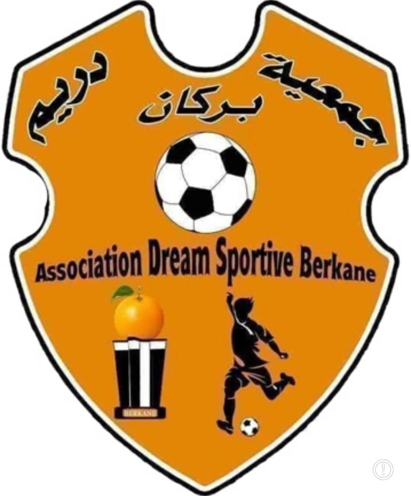
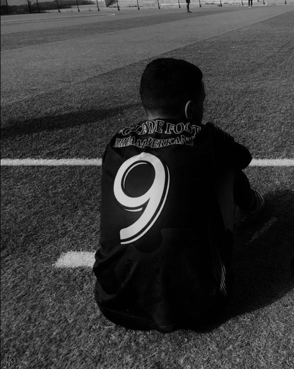

Dream Berkane, une école do football à Berkane qui occupe des jeunes entre 6 et 18 ans ,c'est aussi où Ziad a appris les bases du jeu et c'est l'équipe qui adonné Ziad sa confiance, les amis que Ziad a rencontré à Dream étaient aussi des bonnes joueurs avec ils ont formé une belle équipe, et ils ont gagné beaucoup de matches ou Ziad était un des joueurs capables de changer le jeu et faire la différence, Ziad a joué 9 ans avec cette équipe en apprenant beaucoup de choses et ils sont allés voir et jouer contre les différentes villes au Maroc, ce club est formé par 3 entraîneurs essentielles tel que Mounir pour les enfants entre 6 et 10 ans, Nasreddine pour les enfants entre 10 et 15 ans, après Abdelmajid pour les jeunes de 15 jusqu'à 18 ans, il existe deux entraîneurs qui ont quitté l'équipe mais ils ont tracé des moments importantes dans la vie sportive de Ziad et ils sont Hassan et Hmida. Ziad envoie tous ses remerciements à ce club

Ziad a débuté en attaque exactement comme avant-centre avec sa vitesse incroyable et son sens de but magnifique, deplus Ziad était un spécialiste des tirs lointaines et reconnus avec sa frappe, à l'âge de 14 ans Ziad a commencé à jouer avec son pieds gauches aussi qu'il l'a amélioré jusqu'à que les gens ne distingue plus avec quel pieds joue-t-il ,à 15 Ziad va joué pour le C.R.B où il va changer son poste et devenir plus en plus derrière l'attaquant comme deuxième attaquant ou un milieu offensif, grâce à ce poste, Ziad a pu utiliser ses mistérieuses frappes lointaines de dehors de la surface ou ses passes magnifique pour les avant-centres, après son année avec ce club Ziad a trouvé son poste idéale pour le moment, c'est de jouer comme faux 9°, puisqu'il aime pas rester dans la surface mais plûtot construire le jeu avec se coéquipiers et aussi profiter de toutes ses qualités. Pour lui, dribbler un ou deux joueurs n'a jamais été un problème mais Ziad cherchait plûtot les solutions essentielles et préfèrer le jeu collectif, Ziad est désormais sans équipe cette année mais pour lui, c'est une question de temps car il veut récupérer sa condition physique au début puis se faire tester dans une équipe pour se lancer nouveau d'une manière forte que n'a jamais été.